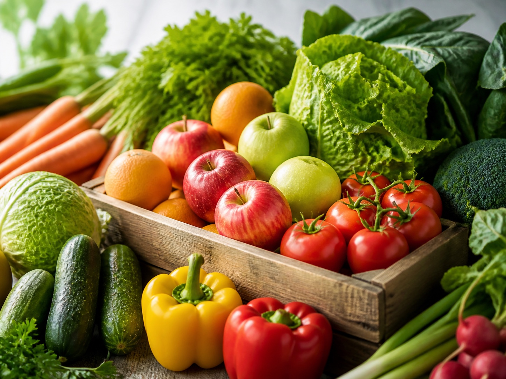
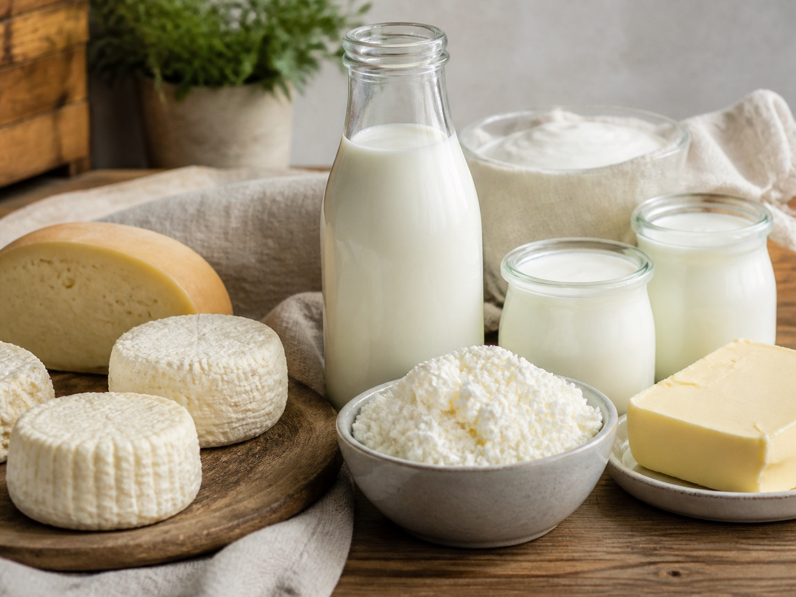
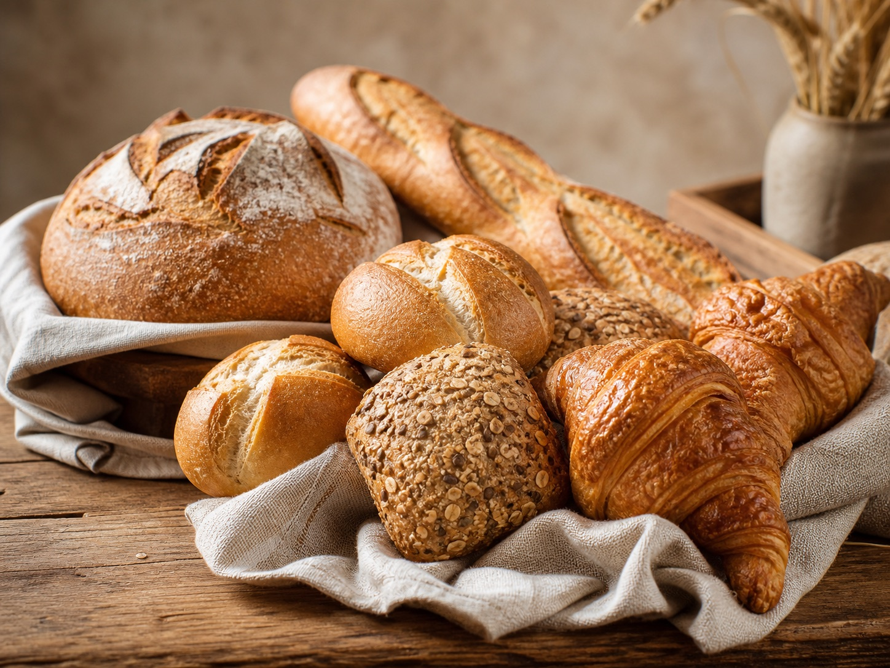
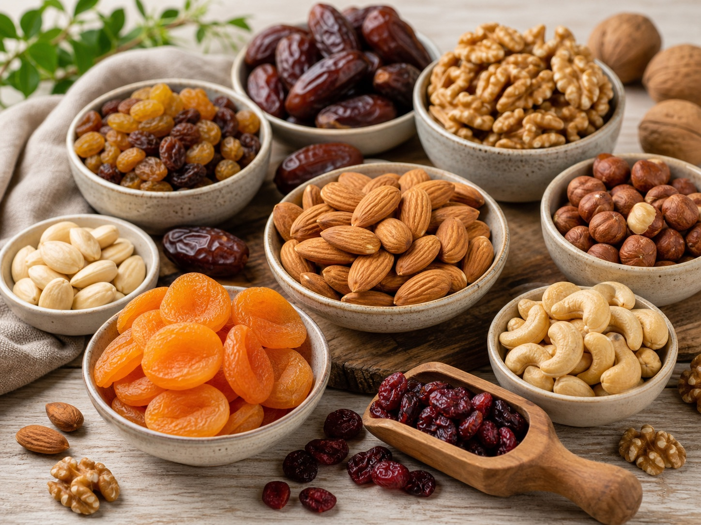
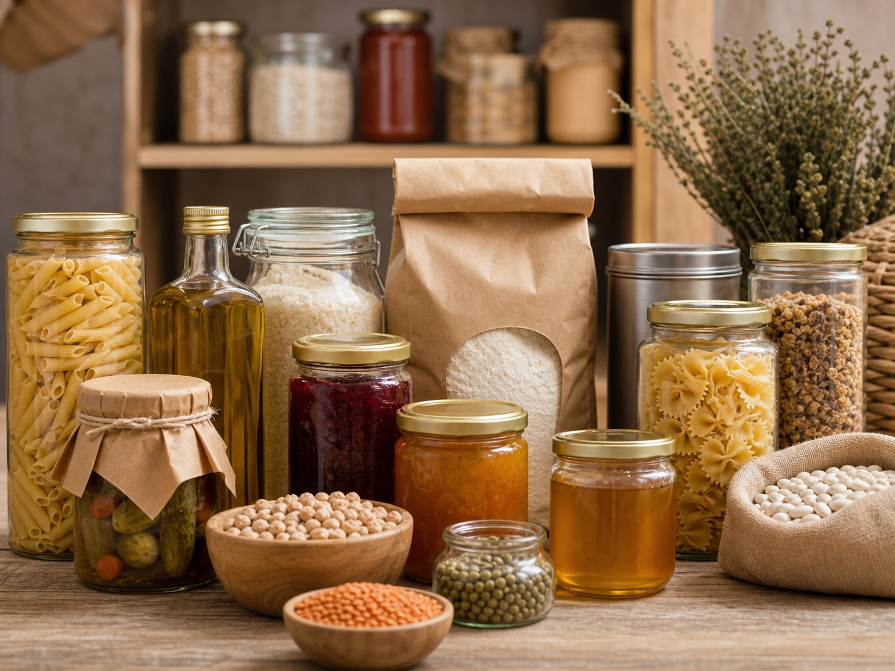

Čerstvé ovoce a zelenina
v Pardubicích už přes 30 let
Rodinný obchod pro každodenní nákup. Kvalitní zboží, rozumné ceny a přístup, díky kterému se k nám zákazníci rádi vracejí.
Rodinný obchod
s dlouhou tradicí
Už více než 30 let nabízíme v Pardubicích čerstvé ovoce, zeleninu a další potraviny pro běžný nákup.
Záleží nám na tom, aby zboží bylo dobré, ceny zůstaly rozumné a nákup byl jednoduchý. Nabídku průběžně doplňujeme podle sezóny, poptávky a toho, co je zrovna v dobré kvalitě.
Najdete u nás ovoce, zeleninu, pečivo, mléčné výrobky i praktické potraviny do spíže. Když si nejste jistí výběrem, rádi poradíme.
Každý den čerstvé
Zboží pravidelně doplňujeme, aby byl výběr čerstvý a spolehlivý pro běžný nákup.
Ověření dodavatelé
Vybíráme dodavatele, u kterých se můžeme opřít o kvalitu, dostupnost a férovou cenu.
Osobní přístup
Malá prodejna má jednu výhodu: domluva je rychlá a s výběrem vám rádi pomůžeme.
Každodenní nákup
na jednom místě
Ovoce, zelenina, pečivo, mléčné výrobky a trvanlivé potraviny pro domácnost i rychlý nákup cestou domů.

Čerstvé ovoce a zelenina
Sezónní ovoce, zelenina na vaření i výběr pro rychlý nákup. Nabídka se mění podle sezóny a dostupnosti.

Mléčné výrobky od lokálních farmářů
Mléko, jogurty, sýry a další výrobky od dodavatelů, u kterých hlídáme chuť, čerstvost i cenu.

Čerstvé pečivo
Chléb, rohlíky i sladší pečivo pro snídani, svačinu nebo běžný nákup během dne.

Sušené plody a oříšky
Oříšky, sušené ovoce a směsi na mlsání, pečení nebo doplnění domácích zásob.

Trvanlivé potraviny
Těstoviny, rýže, luštěniny, med, zavařeniny a další věci, které se doma hodí mít po ruce.
Kde nás najdete
Stavte se v prodejně na Jana Palacha. Nejlépe uvidíte aktuální nabídku přímo na místě.
Kde nás najdeteAktuální nabídka
a novinky
Krátké novinky, fotky z prodejny a informace o aktuální nabídce dáváme nejčastěji na Facebook.
Otevřít FacebookOvoce a zelenina
pro větší odběr
Dodáváme ovoce, zeleninu a další potraviny školním jídelnám, restauracím, táborům i příměstským táborům v Pardubicích a okolí. Domluvíme množství, termín i způsob předání podle toho, co potřebujete.
-
Pro jídelny a provozy
Ovoce a zelenina pro školní jídelny, restaurace i menší kuchyně.
-
Sezónní odběry
Hodí se i pro tábory a příměstské tábory, kde je potřeba větší jednorázový nákup.
-
Domluva podle potřeby
Připravíme množství i sortiment podle jídelníčku, provozu nebo počtu dětí.
-
Doklady a rozvoz
Dodáme potřebné doklady a podle dohody můžeme zboží doručit v okolí.
Najdete nás
na Jana Palacha
Zastavte se pro běžný nákup, čerstvé zboží nebo jen rychle doplnit, co doma chybí.
Adresa
Ovoce a Zelenina PardubiceJana Palacha 1451
530 02 Pardubice
Otevírací doba
| Pondělí – Pátek | 8:00 – 17:30 |
| Sobota | 8:00 – 11:00 |
| Neděle | zavřeno |
Aktuální nabídku nejlépe zjistíte přímo v prodejně nebo na našem Facebooku.